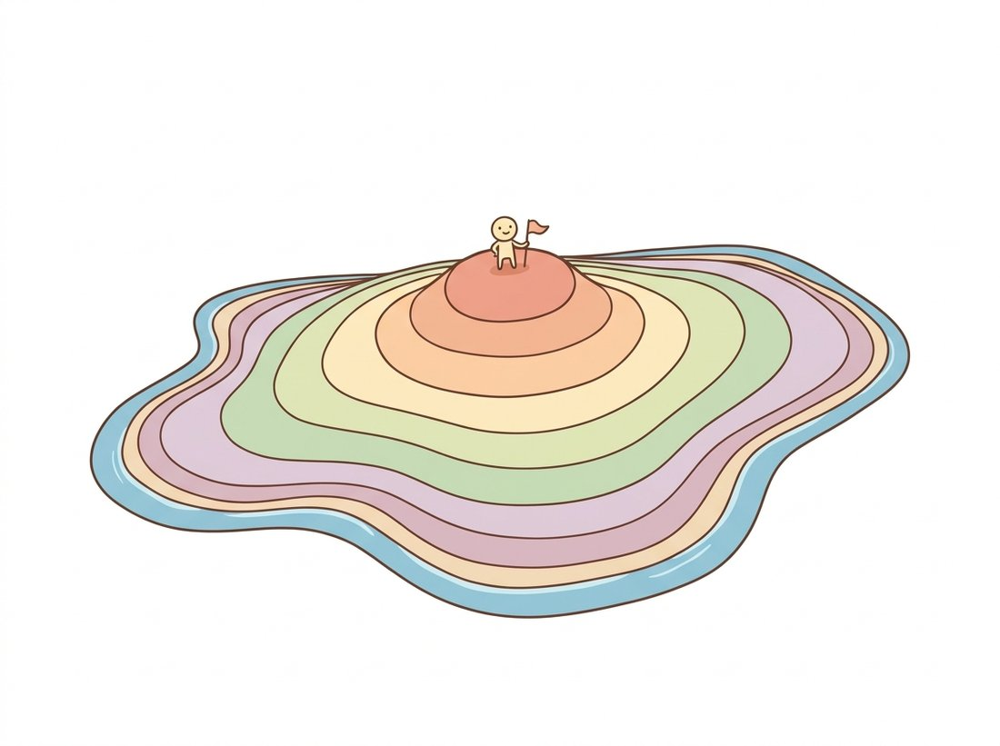

"Every pixel in this shape keeps asking me how far it is from the edge. I am the ridge where the answer stops growing. Some call it the medial axis. I call it the only place with a view of both coasts."
A Deeply Centered Medial Axis
The distance transform answers one question for every pixel simultaneously, "how far is the nearest boundary?", and that single map converts hard geometric problems (where is a part thickest, where do touching objects meet, what is a shape's centerline) into cheap array operations: maxima, peaks, and ridges. This section builds the transform from scratch, reads measurements out of it, uses its peaks to split touching objects, and follows its ridge to the skeleton, the one-pixel summary of an elongated shape.
The previous section turned blobs into rows of measurements, but its properties were global per object: one area, one centroid, one eccentricity. Many industrial questions are local: is this weld seam at least 3 mm wide everywhere? Where exactly should the gripper pinch this part? Where do two touching tablets actually meet? All of these reduce to distances from boundaries, and computing them pixel by pixel against every boundary point would be ruinously quadratic. The distance transform computes them all in two sweeps. From it flows this section's second hero: the skeleton, which compresses an elongated object onto its centerline so that length and width become countable.
1. The Distance Transform, From Scratch Intermediate
The distance transform of a foreground set $A$ assigns each foreground pixel its distance to the nearest background pixel:
$$ \mathrm{DT}(p) \;=\; \min_{q \,\notin\, A} \; d(p, q), $$
under one of the grid metrics from Section 6.1: city-block, chessboard, or Euclidean. Background pixels get 0; values climb toward the interior like elevation rising away from a coastline. The classic chamfer algorithm computes an excellent Euclidean approximation in exactly two raster sweeps, by exploiting a simple fact: the distance at a pixel is at most the distance at a neighbor plus the cost of the step from it. So each pixel just takes the smallest value any already-visited neighbor can offer plus that step cost, a one-line update sometimes called "relaxing" the pixel. Sweeping top-left to bottom-right propagates distances from above and the left; the mirrored return sweep finishes the job. Integer step costs of 3 (edge) and 4 (diagonal), divided by 3 at the end, approximate the true unit edge step ($3/3 = 1$) and the true diagonal step ($\sqrt{2} \approx 1.414$, approximated by $4/3 \approx 1.333$) remarkably well, resolving the metric sandwich of Section 6.1's Exercise 6.1.3. The illustration below makes the elevation picture concrete:

# Compute a distance transform in two raster sweeps via the (3,4)-chamfer
# trick: each pixel relaxes against its already-finalized neighbors, with
# integer step costs 3 (edge) and 4 (diagonal) approximating 1 and sqrt(2).
import numpy as np
def chamfer_dt(mask):
"""Two-pass (3,4)-chamfer distance transform of a boolean mask."""
INF = 10**9
h, w = mask.shape
d = np.where(mask, INF, 0).astype(np.int64)
for y in range(h): # forward sweep: causal neighbors
for x in range(w):
if d[y, x]:
if x: d[y, x] = min(d[y, x], d[y, x-1] + 3)
if y:
d[y, x] = min(d[y, x], d[y-1, x] + 3)
if x: d[y, x] = min(d[y, x], d[y-1, x-1] + 4)
if x < w-1: d[y, x] = min(d[y, x], d[y-1, x+1] + 4)
for y in range(h - 1, -1, -1): # backward sweep: the mirror image
for x in range(w - 1, -1, -1):
if d[y, x]:
if x < w-1: d[y, x] = min(d[y, x], d[y, x+1] + 3)
if y < h-1:
d[y, x] = min(d[y, x], d[y+1, x] + 3)
if x < w-1: d[y, x] = min(d[y, x], d[y+1, x+1] + 4)
if x: d[y, x] = min(d[y, x], d[y+1, x-1] + 4)
return d / 3.0
disk = (np.hypot(*np.mgrid[-50:51, -50:51]) <= 40)
print(f"chamfer max = {chamfer_dt(disk).max():.2f} (true inradius 40)")
# Output:
# chamfer max = 40.33 (true inradius 40)The 25-line chamfer above is an approximation and, in pure Python, a slow one. scipy.ndimage.distance_transform_edt(mask) returns the exact Euclidean transform in one line, using the Felzenszwalb-Huttenlocher style linear-time algorithm (a lower-envelope-of-parabolas construction run separably per dimension, the same separability dividend as Chapter 3's filters). It also accepts sampling= for anisotropic pixels (a CT slice whose voxels are 0.5 mm in-plane and 2 mm between slices) and returns nearest-boundary indices on request. OpenCV's cv2.distanceTransform(mask, cv2.DIST_L2, 5) is the speed-optimized chamfer equivalent, with cv2.DIST_MASK_PRECISE for the exact version.
2. Reading the Map: Thickness, Inradius, Clearance Beginner
A surprising number of measurements are single NumPy expressions on the distance map. The global maximum is the inradius, the radius of the largest inscribed disk, and its location is the deepest point of the object: the natural pick-point for a suction gripper and the most defensible "center" of a non-convex shape (the centroid of a crescent lies outside the crescent; the DT maximum never embarrasses you that way). Along a structure of roughly constant width, twice the DT value at the centerline is the local width. And running the transform on the background measures clearances: how close each free pixel is to the nearest obstacle, the standard costmap ingredient in robot path planning.
# Two production measurements straight off a distance map of a gasket: the
# argmax gives the largest inscribed disk (the gripper pick-point), and the
# minimum positive distance, doubled, gives the thinnest wall a spec cites.
import cv2
import numpy as np
mask = cv2.imread("gasket_mask.png", cv2.IMREAD_GRAYSCALE)
dist = cv2.distanceTransform(mask, cv2.DIST_L2, cv2.DIST_MASK_PRECISE)
inradius = float(dist.max())
cy, cx = np.unravel_index(np.argmax(dist), dist.shape)
print(f"largest inscribed disk: radius {inradius:.1f} px at ({cx},{cy})")
print(f"minimum wall thickness: {2 * dist[dist > 0].min():.1f} px")
# Representative output:
# largest inscribed disk: radius 47.3 px at (312,198)
# minimum wall thickness: 2.0 pxcv2.distanceTransform map of a gasket: the argmax locates the widest interior point for gripping, and the minimum positive distance (doubled) reports the thinnest wall, the number a quality spec actually cites.3. Separating Touching Objects: Peaks as Seeds Intermediate
Here is the distance transform's most celebrated trick. When two convex objects touch, their merged silhouette has one component but two interior summits in the distance map, one per object, separated by a saddle at the contact neck. Find the summits, and you have one seed per true object; grow the seeds back out (flooding downhill on the negated distance map) and the contact line falls exactly along the saddle. The growing step is the watershed algorithm, treated properly with the rest of classical segmentation in Chapter 11; here we use it as a black box, seeded by DT peaks. Figure 6.5.1 visualizes the elevation picture, and the code that follows is the standard recipe, worth keeping within arm's reach forever:
# The canonical recipe for splitting touching objects: one distance-map summit
# per object becomes a seed, and seeded watershed on the negated map floods
# downhill so the cut falls along the saddle at each contact neck.
import numpy as np
from scipy import ndimage as ndi
from skimage.feature import peak_local_max
from skimage.segmentation import watershed
# mask: bool array, touching tablets merged into single components
dist = ndi.distance_transform_edt(mask)
# One peak per tablet: enforce a minimum separation ~ tablet radius.
coords = peak_local_max(dist, min_distance=18, labels=mask)
seeds = np.zeros(dist.shape, dtype=bool)
seeds[tuple(coords.T)] = True
markers, n_seeds = ndi.label(seeds)
labels = watershed(-dist, markers, mask=mask) # flood downhill from seeds
print(f"components before: {ndi.label(mask)[1]} after: {labels.max()}")
# Representative output on a tray of 24 tablets with 7 contacts:
# components before: 17 after: 24peak_local_max with a physically chosen min_distance to find one summit per object, ndi.label to number the seeds, and seeded watershed on the negated map; seventeen merged blobs become the correct twenty-four tablets.
The recipe has one tuning parameter that matters, min_distance, and it should come from physics: just under the smallest expected object radius. Set it too low and a single elongated object yields two summits and gets cut in half; too high and genuinely separate small objects share a seed and stay merged. For objects far from convex, DT peaks stop being reliable seeds at all, which is the cue to graduate to the full marker strategies of Chapter 11.
Seeing this recipe split touching tablets cleanly, learners often treat distance-transform watershed as a general object splitter that will separate any merged blob. In fact the method separates exactly one object per distance-map summit it is seeded with, so it fails in both directions, and silently. A single non-convex or elongated object (an L-bracket, a bent wire, a noisy crack) has several local distance maxima, so raw peak_local_max hands it multiple seeds and the watershed slices one real object into pieces; this is the classic over-segmentation failure. In the other direction, two objects that overlap so much that the saddle between their summits rises near the peak height collapse into one basin and stay merged. The fix is never "run watershed harder": it is to choose seeds deliberately. Set min_distance from the smallest true object radius, suppress shallow peaks, smooth the distance map before peak finding, or supply markers from another cue entirely (the full marker-controlled treatment is Chapter 11's subject). Watershed is only as good as its seeds.
4. Skeletons: The Shape, Minus Its Width Intermediate
Now follow the distance map's ridge. Harry Blum's medial axis (1967) is the set of interior points with two or more nearest boundary points, equivalently the centers of maximal inscribed disks, equivalently the ridge crest of the distance transform. Blum's metaphor is unimprovable: set fire to the entire boundary at once and let the flame front advance inward at uniform speed; the medial axis is where flame fronts meet. For an elongated object (wire, crack, vessel, road) the axis is a one-pixel-wide centerline that preserves the object's topology, and paired with the distance values along it, the axis carries the object's complete width profile: shape equals skeleton plus radius function, almost exactly.
In practice two related operations coexist, and scikit-image ships both. skimage.morphology.medial_axis(mask, return_distance=True) computes the ridge definition and hands back the distance map with it. skimage.morphology.skeletonize(mask) instead runs morphological thinning (the Zhang-Suen style iterative peeling built from Section 6.3's hit-or-miss templates, removing boundary pixels whose deletion cannot break connectivity) and generally produces a smoother, less whiskery centerline. The whiskers deserve their warning label: the medial axis is exquisitely sensitive to boundary noise, since every small bump on the contour spawns a spur branch. A light opening before skeletonizing, or pruning of short branches after, is standard hygiene.
# Dimension an elongated structure from its skeleton: medial_axis hands back
# the centerline and the distance map together, so length is the skeleton's
# pixel count and the width profile is twice the distance sampled along the ridge.
import numpy as np
from skimage.morphology import medial_axis, skeletonize
# crack_mask: bool mask of a crack traced on a concrete surface
skel, dist = medial_axis(crack_mask, return_distance=True)
skel2 = skeletonize(crack_mask) # thinning variant: fewer spurs
length_px = int(skel2.sum()) # centerline pixel count
widths = 2.0 * dist[skel] # local width along the axis
print(f"crack length ~ {length_px} px")
print(f"width: mean {widths.mean():.1f} px, "
f"max {widths.max():.1f} px at the widest point")
# Representative output:
# crack length ~ 1841 px
# width: mean 4.6 px, max 11.2 px at the widest pointmedial_axis returns the centerline and the distance map together, so the crack's length is the skeleton's pixel count and its width profile is twice the distance values sampled along the ridge.The distance transform is computed once and read three ways: its maximum measures (inradius, thickness, clearance), its peaks seed the separation of touching objects, and its ridge is the skeleton that measures length and width. When a shape problem feels geometric and hard, the first question to ask is whether it becomes trivial on the distance map; the answer is yes unreasonably often.
Who: A structural-inspection startup contracted to survey concrete crack growth across 40 highway bridges twice a year.
Situation: Drones photograph the bridge undersides; a segmentation network from Chapter 24, fine-tuned on crack imagery, outputs per-pixel crack masks. The civil engineers do not want masks; the inspection standard they certify against is written in terms of crack length and maximum width in millimeters, per crack.
Problem: Computing length and width from raw masks naively (bounding boxes, area divided by length guesses) misreported branched and curved cracks badly, and width by manual caliper clicks on images did not scale to 40 bridges.
Decision: Post-process every crack mask with this section's pipeline: light opening (per Section 6.3) to de-fuzz the network's boundary, medial_axis with distances, branch-aware length summation along the skeleton graph, width as twice the 95th-percentile ridge distance, and millimeter conversion via the photogrammetric scale from the drone's pose (using the camera geometry of Chapter 5).
Result: Per-crack reports matched manual caliper measurements within 0.2 mm on the validation set; survey post-processing fell from three analyst-weeks to four hours of compute; and regulators accepted the method because every reported number traces to a definition (Blum's axis, the maximal-disk radius) with fifty years of literature behind it.
Lesson: Deep networks find the pixels; classical geometry turns pixels into certified engineering quantities. The handoff between them, mask to skeleton to numbers, is this section.
The objects of this section are now training signals and representations. Skeleton Recall Loss (Kirchhoff et al., ECCV 2024, arXiv:2404.03010) supervises segmentation networks with soft skeletons of the kind computed here, preserving the connectivity of vessels, roads, and cracks at a fraction of the cost of earlier differentiable-skeleton losses like clDice (CVPR 2021); it is precisely a bet that the medial axis captures what per-pixel losses miss. Distance maps have an even bigger second career: boundary-aware segmentation losses regress the signed distance transform instead of class labels, and in 3D the idea scales up to entire shape representations, the neural signed distance fields behind DeepSDF and its descendants that Chapter 27 develops. Meanwhile 3D skeletonization itself advances: Coverage Axis++ (Wang et al., 2024) selects medial spheres for point clouds and meshes, the maximal-disk definition of this section lifted to three dimensions.
Blum proposed the medial axis not for factories but for biology: he wanted a mathematical answer to "what makes two animal silhouettes the same shape?" and argued the grassfire skeleton was how brains might encode form. Psychophysics later gave him a measure of vindication: human observers asked to tap anywhere inside a shape on a touchscreen produce tap clouds that cluster along its medial axis, a result replicated repeatedly since the 2010s. You carry a distance-transform engine, and it runs at a glance.
Derive, with a sketch and the maximal-disk definition, the exact medial axis of a $w \times h$ rectangle with $w > h$: five line segments forming two Y-junctions. State the length of the central segment in terms of $w$ and $h$, what the axis degenerates to when $w = h$, and what happens to the axis when one corner of the rectangle is nicked by a single-pixel notch, explaining why that fragility forces the pruning hygiene this section recommends.
Synthesize masks of $n = 20$ disks (radius 20 px) with controllable overlap: place centers so each touching pair's center distance is $\alpha \cdot 40$ px for $\alpha \in \{1.0, 0.9, 0.8, 0.7, 0.6\}$. Run this section's peak-and-watershed recipe at each $\alpha$ and plot recovered count against $\alpha$. Find the $\alpha$ where separation collapses, inspect the distance map there, and explain the failure in terms of the saddle height approaching the summit height.
Compare this section's (3,4)-chamfer against distance_transform_edt on 100 random blob masks: report the maximum and mean relative error, and the boundary directions where the error concentrates. Then derive the worst-case relative error of the (3,4) weights analytically (consider a step direction of angle $\theta$ and minimize over integer step mixes), and check your formula against the measured maximum. Why do the popular weights use 3 and 4 rather than the more accurate 0.9581 and 1.3556?